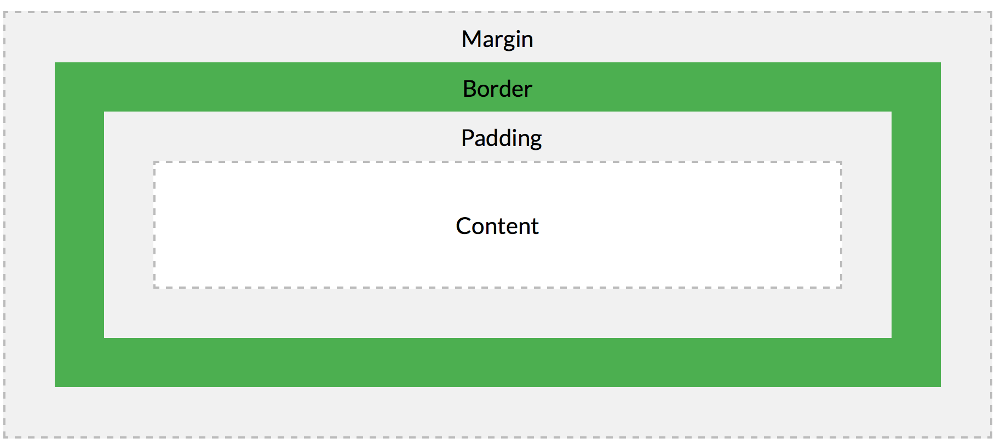

Introduction
CSS: Cascading Style Sheets
Created:2018-04-04 Last modified:2019-04-13
CSS: Cascading Style Sheets
1). External style sheet <link rel="stylesheet" type="text/css" href="file.css">
2). Internal style sheet <style> ... </style>
3). Inline style <h1 style = "color:blue;margin-left:30px;">Header</h1>
Prority: inline > internal > external
selector {property:value; property:value}
| Selector | Example | Example description |
|---|---|---|
| [element].class | .intro | class = "intro" |
| #id | #firstname | id = "firstname" |
| * | * | selects all elements |
| element | p | select all p |
| element, element | div, p | select all div AND p |
| element element | div p | selects all p inside div |
| element > element | div > p | selects all p whose immediate parent is a div |
| element + element | div + p | select all p that are immediate after a div |
| element ~ element | div ~ p | select all p that are after a div |

When you set the width and height properties of an element with CSS, you just set the width and height of the content area. To calculate the full size of an element, you must also add padding, borders and margins.
There two types of elements, block and inline. An element has its default type, e.g. div (block), p (block), li (block), img (inline), span (inline)
display property can modify an element's default value.
li {
display: inline;
}
display can also be set to other values
1). none: hide the element from browser without deleting it. (visibility:hidden hides the element, but it will still take space.)
2). inline-block:
2). flex: a type of css3 introduced layout
3). grid: a type of css3 introduced layout
static, relative, fixed, absolute
1). static is the default setting. Outlay according to the normal flow
2). relative is to relative itself normal static position. We can use left, right to set.
3). fixed even when the broswer is scrolled.
4). absolute: position accroding to its nearest positioned ancestor. (positioned means its position can be
anything except relative). If a element does not have a positioned element, it will use body.
Target, a block element with a specified height. When the content size is greater the container's height.
1). visible, render out the container
2). hidden, clip
3). scroll, add a scroll
1). default width = 100%, which means = 100% of parent's width, height = auto, which means height = contents' height
2). width = 50% | 600px
margin: auto